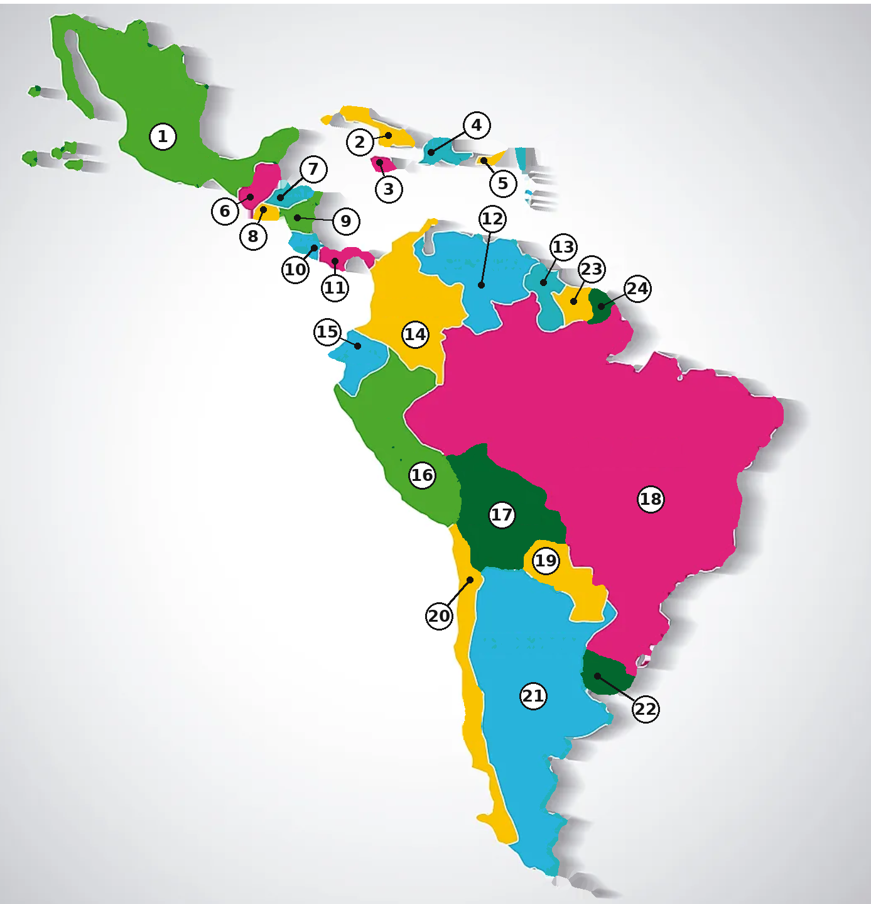

‹ All subjects
Latin America
— map practice
Mode
Matching
Multiple choice
Type it
Direction
Name → Map
Map → Name
Region
Teacher key
Check answers so far
0
of 24
−
100%
+
Reset
Magnifier
Pinch or scroll to zoom · drag to move
